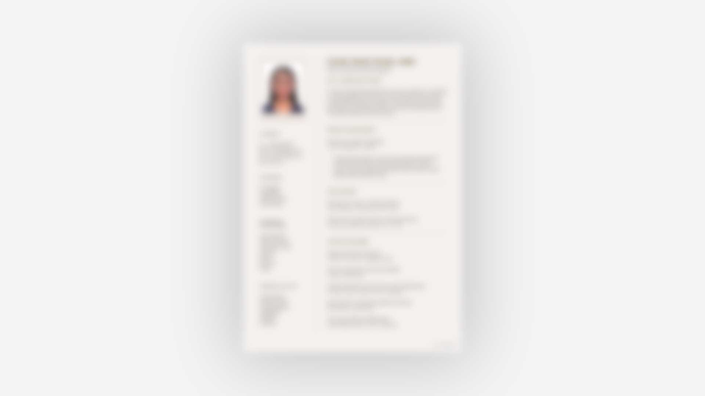
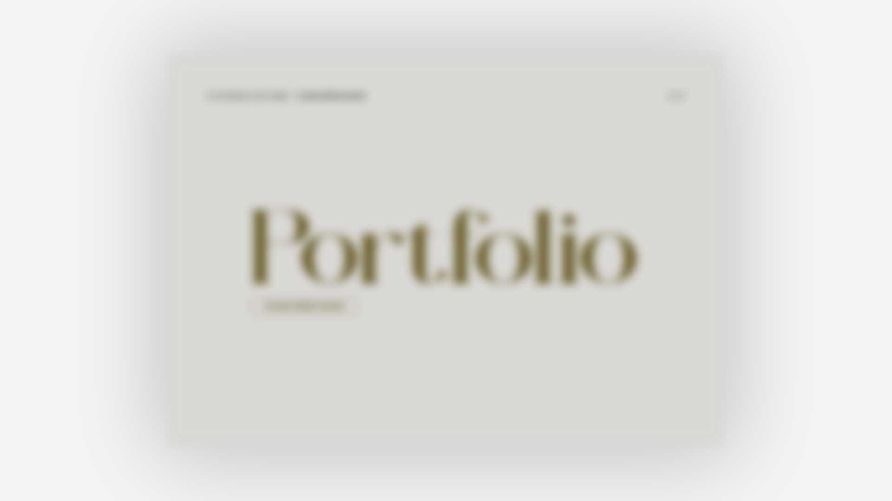

A senior Multimedia Designer with over 4 years of experience.
Combining expertise in UX/UI, graphic design, video, and photography, I create multimedia experiences that engage audiences and drive real results. As a photographer, my work captures landscapes, cityscapes, and portraits through a serene, authentic lens—highlighting the dynamic interplay between city energy and quiet abstraction. Explore my recent shots and visual projects on Instagram.
I have a natural curiosity and love picking up new skills whenever I can. In the past two years alone, I’ve jumped into a diverse range of topics—learning how to craft interior spaces using AutoCAD, becoming a Gemini Certified Educator, and experimenting with vibe coding to build software using AI. I thrive on staying ahead of the curve and applying modern tools to solve problems. Feel free to follow up my latest state on LinkedIn.


My favorite project is Urban Watcher, my graduation project. It connects me with people and helps me visit places I’d never explored before. It’s an immersive, interactive experience that lets guests browse Hong Kong through image and sound—from field trips and exhibition setup to new experiences I learned along the way. I’m grateful the final result matched my expectations. You can see more about the production progress here.
On public transit. Sitting on a bus or train gives me space to reflect on my future—whether as a sharp career woman or a world traveller. These rides are where I map out my self-learning plans to grow step by step.
When I get stuck, I step away and take a short break. Solutions often come in unexpected ways. I rely on food and nature to help me reset and find clarity.
Imagining the final result keeps me motivated. I rely on thorough planning, breaking the project into small, timed milestones to build confidence and steady progress every step of the way.
It’s a tough choice, but I’d say melon when I need comfort, and cashews for quick snacking.
A morning matcha, a beautiful sunset, spotting a cute cat on my walk, or unexpectedly discovering a great new song!